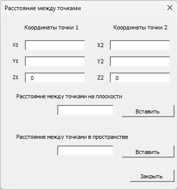
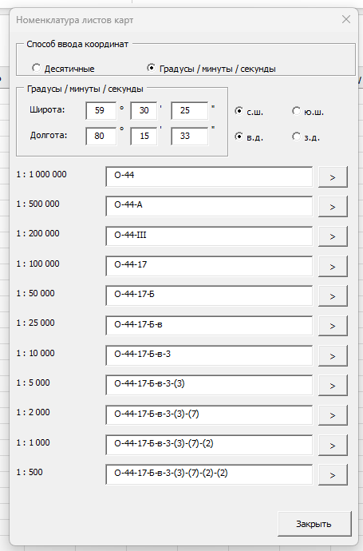
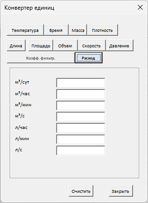
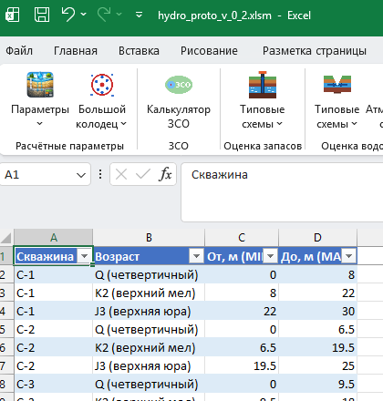
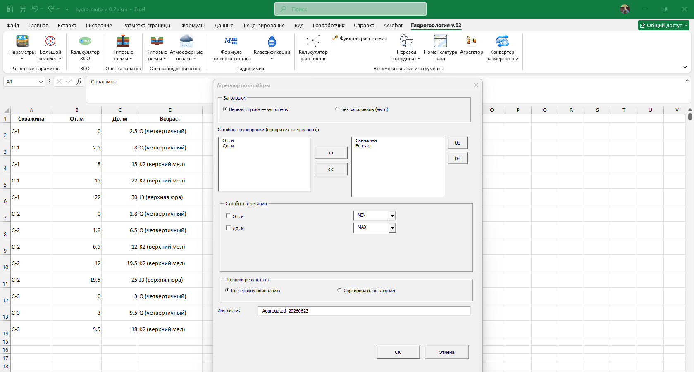
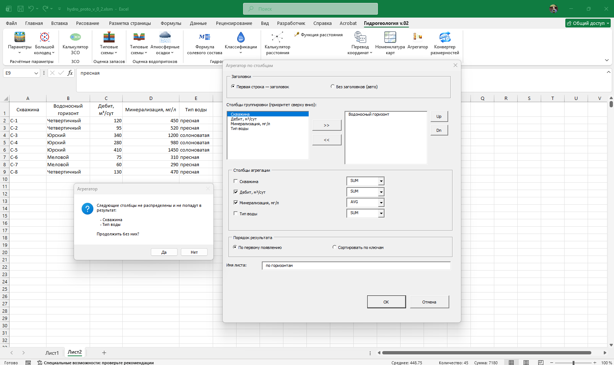
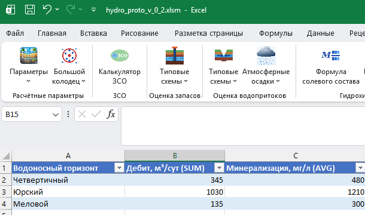

Форма расчёта расстояний между точками, плюс функция для вставки в формулу.
Distance3D — вставляется прямо в ячейку
Номенклатура листов топографических карт по координатам.

Перевод значений между единицами измерения без выхода из Excel.
Градусы/минуты/секунды ⇄ десятичные градусы одной функцией.
DMStoDD — ГМС → десятичные градусы (знак результата равен знаку параметра «градусы»)DDtoDMS — десятичные градусы → строка вида 55°45'07.92″Группировка и агрегация выделенного диапазона: выберите диапазон и нажмите кнопку — инструмент сам предложит столбцы для группировки и агрегации.
Группировка по «Скважина + Возраст» (MIN/MAX) сворачивает детальную литологическую колонку в геологически осмысленные интервалы: вместо построчных замеров «от–до» — итоговые границы каждого стратиграфического слоя по каждой скважине.
Результат


Группировка по «Водоносный горизонт» (SUM/AVG) агрегирует характеристики по каждому горизонту сразу для всех скважин участка. Инструмент честно предупреждает, какие столбцы не попадут в результат — так исключается риск потерять данные незаметно.
Результат
Посмотрите тарифы или напишите нам, чтобы обсудить пилотный проект.